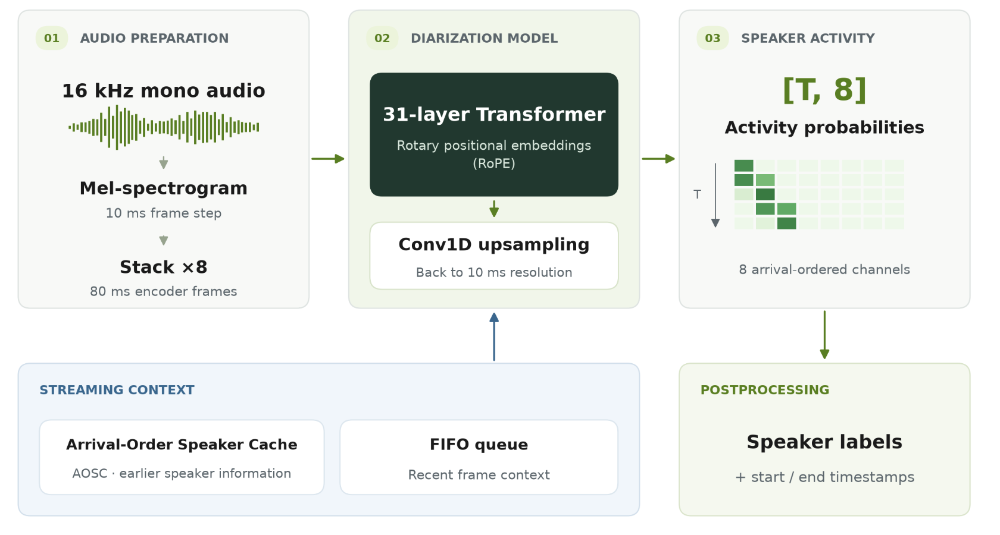
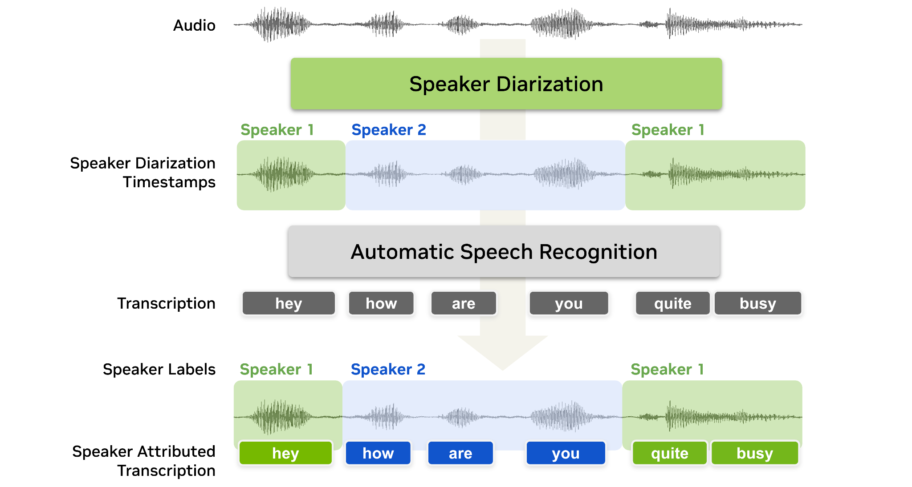
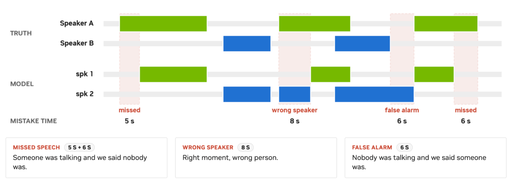

问题、定位与发布证据
| 项目 | 核实内容 |
|---|---|
| 官方首发 | 2026-09-23，模型卡Release Date与官方博客Published一致 |
| Atlas定位 | NVIDIA语音专项支线，保持通用语言模型主干不变 |
| 规模 | 卡片写100M；不把HF文件页精确参数统计当新尺寸SKU |
| 输入 | 16kHz单声道音频；分块推理没有固定时长上限，仍可能长音频退化 |
| 输出 | [T,8]活动概率；可后处理为起止时间与匿名speaker标签 |
| 说话人 | 最多8位；按首次出现排序，不进行实名识别；重叠时多通道可同时激活 |
| 分辨率 | 默认10ms输出步长，可设为10ms的整数倍 |
| 许可 | Open Model, Data and Weights License 1.1；不误标MIT/Apache |

我的判断：最有价值的是将“文字是否正确”和“说话人归属是否正确”分离验收。会议纪要与语音Agent记忆若归错承诺者，即使词全对也可能得到错误行动项；不能用普通WER代表整个系统效果。

博客中的预置演示是合成场景，部分八人场景带说话人前置信息，不是无提示八人基准。没有运行Demo，也没有把人物姓名当模型身份识别能力。
方法、训练与可复现边界
31层带RoPE的Transformer编码器接收10ms Mel特征，8倍特征堆叠后以80ms帧计算，Conv1D再上采样到10ms输出。Sortformer按首次到达时间解决输出通道排列；AOSC保留较早说话人信息，FIFO保留最近帧，当前chunk与右侧上下文提供局部判别依据。它们分别管理长期标签与短期变化，不宜简单统称“无限记忆”。
训练从NEST自监督checkpoint初始化，官方披露64张A100-SXM4-80GB：先用模拟混合语音离线训练，再用真实对话和模拟混合做流式微调。约10000小时真实对话与82611小时模拟混合分别列示，不能当独立来源总小时或训练token数。模拟来源小时数6694/6743/6745/6755/36458/19216合计82611；David AI等许可语料无法仅凭开源模型卡重建。完整来源清单见原始卡。
| 配置 | 输入缓冲延迟 | cache | FIFO | chunk | 右上下文 | 更新周期 |
|---|---|---|---|---|---|---|
| 离线风格 | 30.4s | 264 | 40 | 340 | 40 | 300 |
| 低延迟 | 1.04s | 264 | 264 | 9 | 4 | 222 |
| 很低延迟 | 0.64s | 264 | 264 | 6 | 2 | 222 |
| 超低延迟 | 0.32s | 264 | 264 | 3 | 1 | 222 |
参数单位都是80ms帧；输入缓冲=(chunk+右上下文)×80ms。技术上可用80ms，但官方最低推荐320ms。缓冲延迟不含计算、传输、ASR和应用时间；30.4s“离线风格”也不等于一次看完整录音。
复现入口是NeMo的e2e_diarize_speech.py及官方配置，也有Transformers集成。这里只存接口说明，不执行随仓库代码；库版本、编译开关、缓存状态和后处理都应冻结。模型/基线cache不同（264 vs188），所以比较的是已发布整套配置，不是仅说话人数这一变量的严格消融。

DER分为误报、漏检和说话人混淆；重叠参考语音分别计入说话人时间。全部评估包含重叠，DIHARD/AliMeeting/AMI/NOTSOFAR为0秒collar，CALLHOME为0.25秒。AMI/AliMeeting/NOTSOFAR使用指定强制对齐RTTM；换回原分段标签会改变漏检与边界口径，不能直接判复现失败。901是按条件计数的录音，MHM/SC可能来自同一会议，不等于901独立会议。
| 同为1.04s缓冲：全量DER，越低越好 | 四人基线 | 本模型 |
|---|---|---|
| DIHARD III | 19.60 | 13.18 |
| CALLHOME-Part2 | 11.31 | 10.29 |
| AliMeeting Near | 12.47 | 6.59 |
| AliMeeting Far | 15.58 | 10.80 |
| AMI MHM | 16.36 | 9.48 |
| AMI SDM | 21.73 | 12.80 |
| NOTSOFAR MHM | 22.12 | 7.70 |
| NOTSOFAR SC | 31.81 | 12.77 |
八条件相对DER降幅的无权均值约41.0%，不是把所有录音池化后的DER，也不是每个数据集都提升41%。不能仅引用博客标题的40%而省略聚合定义。
必须保留反例：30.4s CALLHOME两人子集新模型5.98高于基线5.68；AMI MHM人数准确率本模型87.5低于基线93.75，虽DER更低。DIHARD的5–9人聚合含超过8人上限的录音。全集更好不代表每个子集、人数估计或域都更好。
速度测于RTX PRO5000、BF16、NeMo PyTorch，eager/compile与batch1/32分开。30.4s配置batch32编译RTFx15113与基线2619对应批吞吐，不能解释成单流延迟或实时语音交互响应；1.04s为865对136，batch1编译164对42。这里未独立复测。
完整官方性能表与来源
TL;DR：下面逐项保留公开模型卡的8条件表与速度表，粗体仅沿用官方，部分粗体值并不优于基线。读数必须随上述RTTM、collar、重叠、硬件与缓冲口径一起使用。
DIHARD III
| Model | Latency | DER ↓ (1–4 spk) | DER ↓ (5–9 spk) | DER ↓ (full) | SCA ↑ (full) | MAE ↓ (full) |
|---|---|---|---|---|---|---|
diar_streaming_sortformer_4spk-v2.1 | 30.4 s | 13.98 | 40.21 | 19.09 | 75.29 | 0.5135 |
diar_streaming_sortformer_4spk-v2.1 | 1.04 s | 14.33 | 41.39 | 19.60 | 69.50 | 0.5483 |
diar_streaming_sortformer_4spk-v2.1 | 0.32 s | 14.37 | 42.71 | 19.85 | 66.80 | 0.5869 |
Nemotron-3-Diarization | 30.4 s | 9.13 | 27.58 | 12.73 | 81.47 | 0.2664 |
Nemotron-3-Diarization | 1.04 s | 9.47 | 28.65 | 13.18 | 76.83 | 0.3243 |
Nemotron-3-Diarization | 0.64 s | 9.44 | 29.16 | 13.28 | 77.22 | 0.3205 |
Nemotron-3-Diarization | 0.32 s | 9.69 | 29.49 | 13.55 | 76.45 | 0.3282 |
CALLHOME-Part2
| Model | Latency | DER ↓ (2 spk) | DER ↓ (3 spk) | DER ↓ (4 spk) | DER ↓ (5 spk) | DER ↓ (6 spk) | DER ↓ (full) | SCA ↑ (full) | MAE ↓ (full) |
|---|---|---|---|---|---|---|---|---|---|
diar_streaming_sortformer_4spk-v2.1 | 30.4 s | 5.68 | 10.41 | 12.36 | 21.00 | 21.15 | 10.32 | 84.40 | 0.1720 |
diar_streaming_sortformer_4spk-v2.1 | 1.04 s | 6.83 | 11.26 | 13.49 | 21.67 | 23.82 | 11.31 | 82.40 | 0.1880 |
diar_streaming_sortformer_4spk-v2.1 | 0.32 s | 7.92 | 12.54 | 15.32 | 24.01 | 27.70 | 12.67 | 72.40 | 0.2920 |
Nemotron-3-Diarization | 30.4 s | 5.98 | 9.26 | 11.03 | 15.82 | 15.80 | 9.10 | 91.60 | 0.0840 |
Nemotron-3-Diarization | 1.04 s | 6.98 | 10.90 | 11.84 | 18.47 | 16.01 | 10.29 | 89.20 | 0.1080 |
Nemotron-3-Diarization | 0.64 s | 7.21 | 11.17 | 12.10 | 19.31 | 16.70 | 10.66 | 88.40 | 0.1160 |
Nemotron-3-Diarization | 0.32 s | 7.75 | 11.84 | 13.02 | 20.65 | 17.30 | 11.32 | 88.40 | 0.1160 |
AliMeeting Test Near
| Model | Latency | DER ↓ | SCA ↑ | MAE ↓ |
|---|---|---|---|---|
diar_streaming_sortformer_4spk-v2.1 | 30.4 s | 11.57 | 80.00 | 0.20 |
diar_streaming_sortformer_4spk-v2.1 | 1.04 s | 12.47 | 70.00 | 0.30 |
diar_streaming_sortformer_4spk-v2.1 | 0.32 s | 13.68 | 70.00 | 0.30 |
Nemotron-3-Diarization | 30.4 s | 6.40 | 90.00 | 0.10 |
Nemotron-3-Diarization | 1.04 s | 6.59 | 85.00 | 0.15 |
Nemotron-3-Diarization | 0.64 s | 6.74 | 85.00 | 0.15 |
Nemotron-3-Diarization | 0.32 s | 7.19 | 80.00 | 0.20 |
AliMeeting Test Far
| Model | Latency | DER ↓ | SCA ↑ | MAE ↓ |
|---|---|---|---|---|
diar_streaming_sortformer_4spk-v2.1 | 30.4 s | 13.69 | 95.00 | 0.05 |
diar_streaming_sortformer_4spk-v2.1 | 1.04 s | 15.58 | 75.00 | 0.25 |
diar_streaming_sortformer_4spk-v2.1 | 0.32 s | 16.85 | 65.00 | 0.35 |
Nemotron-3-Diarization | 30.4 s | 10.47 | 100 | 0 |
Nemotron-3-Diarization | 1.04 s | 10.80 | 95.00 | 0.05 |
Nemotron-3-Diarization | 0.64 s | 11.03 | 85.00 | 0.15 |
Nemotron-3-Diarization | 0.32 s | 11.60 | 85.00 | 0.15 |
AMI Test MHM
| Model | Latency | DER ↓ | SCA ↑ | MAE ↓ |
|---|---|---|---|---|
diar_streaming_sortformer_4spk-v2.1 | 30.4 s | 15.81 | 93.75 | 0.0625 |
diar_streaming_sortformer_4spk-v2.1 | 1.04 s | 16.36 | 93.75 | 0.0625 |
diar_streaming_sortformer_4spk-v2.1 | 0.32 s | 17.77 | 93.75 | 0.0625 |
Nemotron-3-Diarization | 30.4 s | 9.25 | 87.50 | 0.1250 |
Nemotron-3-Diarization | 1.04 s | 9.48 | 81.25 | 0.1875 |
Nemotron-3-Diarization | 0.64 s | 9.62 | 81.25 | 0.1875 |
Nemotron-3-Diarization | 0.32 s | 10.05 | 81.25 | 0.1875 |
AMI Test SDM
| Model | Latency | DER ↓ | SCA ↑ | MAE ↓ |
|---|---|---|---|---|
diar_streaming_sortformer_4spk-v2.1 | 30.4 s | 21.42 | 93.75 | 0.0625 |
diar_streaming_sortformer_4spk-v2.1 | 1.04 s | 21.73 | 93.75 | 0.0625 |
diar_streaming_sortformer_4spk-v2.1 | 0.32 s | 23.89 | 93.75 | 0.0625 |
Nemotron-3-Diarization | 30.4 s | 11.14 | 87.50 | 0.1250 |
Nemotron-3-Diarization | 1.04 s | 12.80 | 87.50 | 0.1250 |
Nemotron-3-Diarization | 0.64 s | 13.06 | 87.50 | 0.1250 |
Nemotron-3-Diarization | 0.32 s | 12.95 | 87.50 | 0.1250 |
NOTSOFAR1 MHM
| Model | Latency | DER ↓ (3–4 spk) | DER ↓ (5–7 spk) | DER ↓ (full) | SCA ↑ (full) | MAE ↓ (full) |
|---|---|---|---|---|---|---|
diar_streaming_sortformer_4spk-v2.1 | 30.4 s | 11.14 | 29.38 | 21.77 | 35.00 | 0.9375 |
diar_streaming_sortformer_4spk-v2.1 | 1.04 s | 12.03 | 29.49 | 22.12 | 34.38 | 0.9437 |
diar_streaming_sortformer_4spk-v2.1 | 0.32 s | 12.94 | 30.75 | 23.37 | 32.50 | 0.9625 |
Nemotron-3-Diarization | 30.4 s | 5.25 | 7.86 | 6.77 | 93.75 | 0.0625 |
Nemotron-3-Diarization | 1.04 s | 5.85 | 9.02 | 7.70 | 79.37 | 0.2062 |
Nemotron-3-Diarization | 0.64 s | 6.07 | 9.39 | 7.99 | 79.37 | 0.2062 |
Nemotron-3-Diarization | 0.32 s | 6.57 | 10.16 | 8.65 | 74.38 | 0.2687 |
NOTSOFAR1 SC
| Model | Latency | DER ↓ (3–4 spk) | DER ↓ (5–7 spk) | DER ↓ (full) | SCA ↑ (full) | MAE ↓ (full) |
|---|---|---|---|---|---|---|
diar_streaming_sortformer_4spk-v2.1 | 30.4 s | 19.67 | 38.42 | 30.49 | 33.12 | 0.9563 |
diar_streaming_sortformer_4spk-v2.1 | 1.04 s | 20.58 | 39.84 | 31.81 | 33.12 | 0.9563 |
diar_streaming_sortformer_4spk-v2.1 | 0.32 s | 22.14 | 40.80 | 32.95 | 31.87 | 0.9688 |
Nemotron-3-Diarization | 30.4 s | 7.94 | 13.21 | 11.00 | 78.12 | 0.2188 |
Nemotron-3-Diarization | 1.04 s | 8.96 | 15.44 | 12.77 | 60.62 | 0.4062 |
Nemotron-3-Diarization | 0.64 s | 9.47 | 16.16 | 13.35 | 55.00 | 0.4625 |
Nemotron-3-Diarization | 0.32 s | 10.28 | 17.61 | 14.53 | 55.00 | 0.4625 |
Inference Speed Evaluation
| Model | Latency | RTFx ↑ (batch_size=1) eager / compiled | RTFx ↑ (batch_size=32) eager / compiled |
|---|---|---|---|
diar_streaming_sortformer_4spk-v2.1 | 30.4 s | 874 / 1468 | 3204 / 2619 |
diar_streaming_sortformer_4spk-v2.1 | 1.04 s | 16 / 42 | 193 / 136 |
diar_streaming_sortformer_4spk-v2.1 | 0.32 s | 8 / 21 | 101 / 76 |
Nemotron-3-Diarization | 30.4 s | 1340 / 4385 | 12196 / 15113 |
Nemotron-3-Diarization | 1.04 s | 38 / 164 | 581 / 865 |
Nemotron-3-Diarization | 0.64 s | 25 / 113 | 391 / 579 |
Nemotron-3-Diarization | 0.32 s | 12.5 / 54 | 199 / 292 |
Acceleration Engine: PyTorch backend through the NeMo Framework, with and without torch.compile().
Test Hardware: NVIDIA Blackwell RTX PRO 5000.
Precision: BF16.
---
来源与关联
- S1 官方HF模型卡，含2026-09-23首发、方法、数据、完整表及RTTM协议。
- S2 NVIDIA官方博客，首发同日，含架构与应用图、41.0%聚合定义。
- S3 技术报告链接，未阅读。
- 关联：Nemotron Labs Unified ASR。
📊 相关可视化: 中文Poster